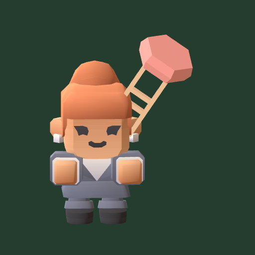

<- all projects

Last Call
PC
Volume
Live
Flick troublemakers out, save your bar and keep the tips. 3D physics, offline.
Run the Rusty Anchor as Mags O'Rourke, part host, part bouncer and full-time neighborhood defender. Mags spent her severance cheque on a second chance, but developer Mr. Vale wants the block for condos and five rowdy crews are about to test the furniture. Punch, grab and flick troublemakers through the glowing exit, or calm them with free water, shared fries and the jukebox. Meet 25 patron types, upgrade the bar, hire Big Lou, earn five bar themes and keep the doors open for thirty story nights before the Last Call Classic.